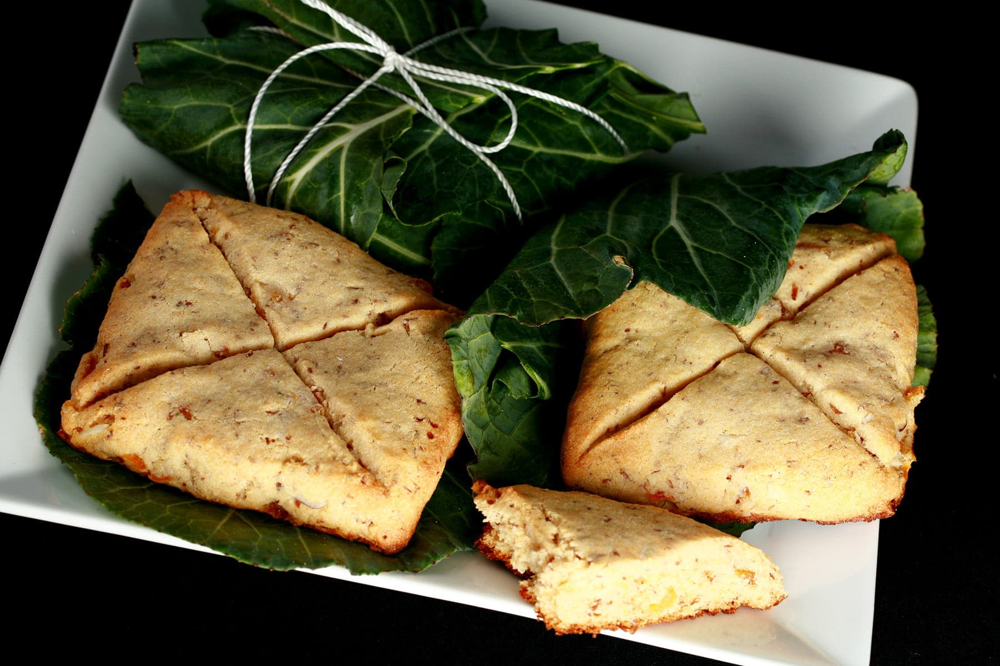

Lord of the Rings Lembas Bread

Description
Elvish Waybread from Lord of the Rings to sustain you on your journey through Middle Earth. Breakfast, second breakfast, elevenses, lunch, afternoon tea, dinner and supper.
Ingredients
- 2 cups Bobs Red Mill gluten-free baking mix (or all-purpose flour)
- 1 ripe banana, mashed
- ¼ cup organic coconut oil
- ½ cup maple syrup
- 2T white chia seeds plus 6T water
- pinch of sea salt
- non-poisonous leaves (I used Hawaiian Ti leaves but you could also use collard greens or banana leaves)
- hemp twine
Preparation
- Step 1: Mix chia and water,set aside for 5 minutes until it forms a gel.
- Step 2: Add mashed banana, coconut oil, maple syrup, the chia gel and a pinch of salt to a large mixing bowl.
- Step 3: Gently mix in flour. Do not over mix or your Lembas will be tough.
- Step 4: Form the dough into a ball and refrigerate for one hour before rolling out.
- Step 5: Flour your rolling pin and work surface.
- Step 6: Roll dough ¼ thick and cut into squares with a cookie cutter.
- Step 7: Use the blunt edge of a knife or spatula to mark an “X” on the top of each square.
- Step 8: Do not cut all the way through. This “X’ will prevent the dough from rising an dbecoming misshapen.
- Step 9: Bake at 350F for 25 minutes.
- Step 10: Wrap in leaves and secure with twine.
- Step 11: Store in an airtight container in the fridge for up to 3 days.